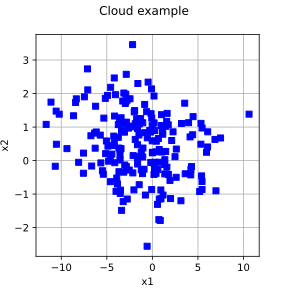
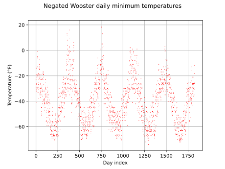
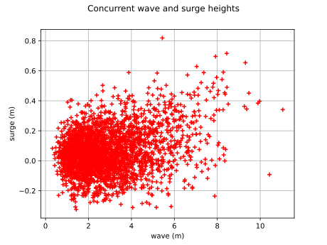
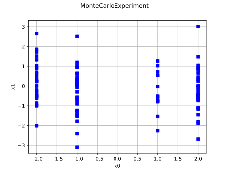
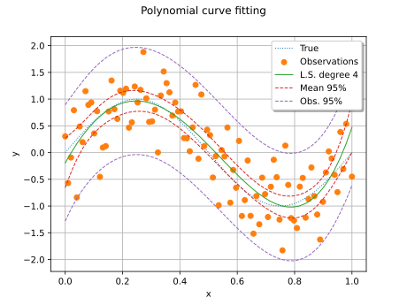
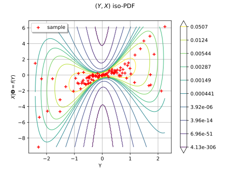
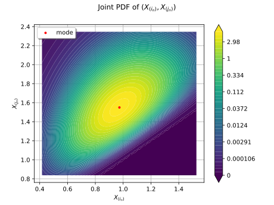

Cloud¶
(Source code, svg)

- class Cloud(*args)¶
Cloud.
- Available constructors:
Cloud(data, legend=’ ‘)
Cloud(dataX, dataY, legend=’ ‘)
Cloud(data, color, pointStyle, legend=’ ‘)
Cloud(dataComplex, legend=’ ‘)
- Parameters:
- data2-d sequence of float
Points from which the cloud is built.
- dataX, dataYtwo 2-d sequences of float of dimension 1, or two sequences of float
Points from which the cloud is built.
- legendstr
Legend of the Cloud.
- colorstr
Color of the points. If not specified, the default color is the first color in the default palette.
- pointStylestr
Style of the points. If not specified, by default it is ‘plus’.
- dataComplex
ComplexCollection Collection of complex points.
Methods
BuildDefaultPalette(size)Build default palette.
BuildRainbowPalette(size)Build rainbow palette.
BuildTableauPalette(size)Build tableau palette.
ConvertFromHSV(hue, saturation, value)Convert an HSV triplet to a valid hexadecimal code.
ConvertFromHSVA(hue, saturation, value, alpha)Convert an HSVA quadruplet to a valid hexadecimal code.
ConvertFromHSVIntoRGB(hue, saturation, value)Convert an HSV triplet into an RGB triplet.
ConvertFromName(name)Convert a color name to a valid hexadecimal code.
ConvertFromRGB(*args)Convert an RGB triplet to a valid hexadecimal code.
ConvertFromRGBA(*args)Convert an RGBA quadruplet to a valid hexadecimal code.
ConvertFromRGBIntoHSV(*args)Convert an RGB triplet to HSV triplet.
ConvertToRGB(key)Convert an hexadecimal code into an RGB triplet.
ConvertToRGBA(key)Convert an hexadecimal code into an RGBA quadruplet.
ConvertValuesToColors(values, palette, alpha)Convert a list of scalar values into a list of colors.
Return the list of the valid color bar positions of contour drawables.
Return the list of the valid color maps of contour drawables.
Return the list of the valid colors of the drawable element.
Return the list of the valid coloration extends of contour drawables.
Return the list of the valid fill styles of the drawable element.
Return the list of the valid line styles of the drawable element.
Return the list of the valid norms of contour drawables.
Return the list of the valid point styles of the drawable element.
getAlpha()Accessor to the alpha blending value.
Accessor to the bounding box of the whole plot.
Accessor to the center of the Pie inside the bounding box.
Accessor to the object's name.
getColor()Accessor to the color of the drawable element.
Accessor to the code of the color of the drawable element.
getData()Accessor to the data from which the Drawable is built.
Accessor to the indication of data labels' presence within the drawable element.
Accessor to the color of the Polygon edge.
Accessor to the fill style of the drawable element.
Accessor to the labels of data.
Accessor to the legend of the drawable element.
Accessor to the levels of the Contour.
Accessor to the line style of the drawable element.
Accessor to the line width of the drawable element.
getName()Accessor to the object's name.
Accessor to the origin of the BarPlot.
Accessor to the names of the colors used for the Drawable.
Accessor to the Red, Green, Blue, Alpha components of the palette on a unit scale.
Accessor to the pattern of the Staircase.
Accessor to the point style of the drawable element.
Accessor to the radius of the Pie.
Accessor to the annotations of the Text.
Accessor to the position of annotations.
Accessor to the text size.
getX()Accessor to the first coordinate.
getY()Accessor to the second coordinate.
hasName()Test if the object is named.
setAlpha(alpha)Accessor to the alpha blending value.
setCenter(center)Accessor to the center of the Pie inside the bounding box.
setColor(color)Accessor to the color of the drawable element.
setDrawLabels(drawLabels)Accessor to the indication of data labels' presence within the drawable element.
setFillStyle(fillStyle)Accessor to the fill style of the drawable element.
setLabels(labels)Accessor to the labels of data.
setLegend(legend)Accessor to the legend of the drawable element.
setLevels(levels)Accessor to the levels of the Contour.
setLineStyle(lineStyle)Accessor to the line style of the drawable element.
setLineWidth(lineWidth)Accessor to the line width of the drawable element.
setName(name)Accessor to the object's name.
setOrigin(origin)Accessor to the origin of the BarPlot.
setPalette(palette)Accessor to the names of the colors used for the Pie.
setPattern(style)Accessor to the pattern of the Staircase.
setPointStyle(pointStyle)Accessor to the point style of the drawable element.
setRadius(radius)Accessor to the radius of the Pie.
setTextAnnotations(textAnnotations)Accessor to the annotations of the Text.
setTextPositions(textPositions)Accessor to the position of annotations.
setTextSize(size)Accessor to the text size.
setX(x)Accessor to the first coordinate.
setY(y)Accessor to the second coordinate.
Examples
>>> import openturns as ot >>> R = ot.CorrelationMatrix(2) >>> R[1, 0] = -0.25 >>> distribution = ot.Normal([-1.5, 0.5], [4.0, 1.0], R) >>> sample = distribution.getSample(100) >>> # Create an empty graph >>> myGraph = ot.Graph('Normal sample', 'x1', 'x2', True, '') >>> # Create the cloud >>> myCloud = ot.Cloud(sample, 'blue', 'fsquare', 'My Cloud') >>> myGraph.add(myCloud)
- __init__(*args)¶
- static BuildDefaultPalette(size)¶
Build default palette.
- Parameters:
- nint
![n > 0]()
Number of colors needed.
- nint
- Returns:
- listColors
Description List of n color codes defined according to the default palette.
- listColors
Notes
This function uses the ‘Drawable-DefaultPaletteName’ key of the
ResourceMap, which can be equal to either ‘Tableau’ or ‘Rainbow’.Examples
>>> import openturns as ot >>> print(ot.Drawable().BuildDefaultPalette(4)) [#1f77b4,#ff7f0e,#2ca02c,#d62728] >>> ot.ResourceMap.SetAsString('Drawable-DefaultPaletteName', 'Rainbow') >>> print(ot.Drawable.BuildDefaultPalette(4)) [#ff0000,#ccff00,#00ff66,#0066ff] >>> ot.ResourceMap.SetAsString('Drawable-DefaultPaletteName', 'Tableau') >>> print(ot.Drawable.BuildDefaultPalette(4)) [#1f77b4,#ff7f0e,#2ca02c,#d62728] >>> ot.ResourceMap.Reset()
- static BuildRainbowPalette(size)¶
Build rainbow palette.
- Parameters:
- nint
Number of colors needed.
- nint
- Returns:
- listColors
Description List of n color codes defined according to the rainbow palette.
- listColors
Notes
The colors are generated in the HSV space, with H (the hue) varying in a number of different values given by ‘Drawable-DefaultPalettePhase’ in
ResourceMapand V (the value) being decreased linearly at each cycle of the hue.Examples
>>> import openturns as ot >>> print(ot.Drawable.BuildRainbowPalette(4)) [#ff0000,#ccff00,#00ff66,#0066ff]
- static BuildTableauPalette(size)¶
Build tableau palette.
- Parameters:
- nint and
![n < 10]()
Number of colors needed.
- nint
- Returns:
- listColors
Description List of n color codes defined according to the tableau palette.
- listColors
Notes
The colors are generated in the HSV space. When the number of colors is greater than 10, the value V decreases linearly depending on the ‘Drawable-DefaultPalettePhase’ key of the
ResourceMapfor each block of 10 colors.Examples
>>> import openturns as ot >>> print(ot.Drawable.BuildTableauPalette(4)) [#1f77b4,#ff7f0e,#2ca02c,#d62728]
- static ConvertFromHSV(hue, saturation, value)¶
Convert an HSV triplet to a valid hexadecimal code.
- Parameters:
- huefloat
Hue.
- saturationfloat
Saturation.
- valuefloat
Value.
- Returns:
- codestr
Hexadecimal code of the color.
- static ConvertFromHSVA(hue, saturation, value, alpha)¶
Convert an HSVA quadruplet to a valid hexadecimal code.
- Parameters:
- huefloat
Hue.
- saturationfloat
Saturation.
- valuefloat
Value.
- alphafloat
Alpha component.
- Returns:
- codestr
Hexadecimal code of the color.
- static ConvertFromHSVIntoRGB(hue, saturation, value)¶
Convert an HSV triplet into an RGB triplet.
- Parameters:
- huefloat
Hue with 0<=hue<=360.
- saturationfloat
Saturation with 0<=saturation<=1.
- valuefloat
Value with 0<=value<=1.
- Returns:
- RGBComponents
Point RGB (Red, Green and Blue) components of the color.
- RGBComponents
Examples
>>> import openturns as ot >>> print(ot.Drawable.ConvertFromHSVIntoRGB(215.0, 0.2, 0.3)) [0.24,0.265,0.3]
- static ConvertFromName(name)¶
Convert a color name to a valid hexadecimal code.
- Parameters:
- namestr
Name of the color. The valid color names are given by the
GetValidColors()method.
- Returns:
- codestr
Hexadecimal code of the color.
Examples
>>> import openturns as ot >>> print(ot.Drawable.ConvertFromName('red')) #FF0000
- static ConvertFromRGB(*args)¶
Convert an RGB triplet to a valid hexadecimal code.
- Parameters:
- red, green and blueeither three nonnegative integers or three nonnegative floats
These values are the Red, Green and Blue components of a color, a value of 0 (or 0.0) meaning that the component is absent in the color, a value of 255 (or 1.0) meaning that the component is fully saturated.
- Returns:
- codestr
Hexadecimal code of the color.
Examples
>>> import openturns as ot >>> print(ot.Drawable.ConvertFromRGB(255,0,0)) #ff0000
- static ConvertFromRGBA(*args)¶
Convert an RGBA quadruplet to a valid hexadecimal code.
- Parameters:
- red, green and blueeither three nonnegative integers or three nonnegative floats
These values are the Red, Green and Blue components of a color, a value of 0 (or 0.0) meaning that the component is absent in the color, a value of 255 (or 1.0) meaning that the component is fully saturated.
- alphaeither nonnegative integer or nonnegative float
Level of the color’s transparency, 0 (or 0.0) meaning that the color is fully transparent and 255 (or 1.0) meaning that the color is fully opaque. The alpha channel is only supported by a few devices, namely the PDF and PNG formats, for the other format the color is fully transparent as soon as its alpha channel is less than 255 (or 1.0).
- Returns:
- codestr
Hexadecimal code of the color.
Examples
>>> import openturns as ot >>> print(ot.Drawable.ConvertFromRGBA(255,0,0,255)) #ff0000ff
- static ConvertFromRGBIntoHSV(*args)¶
Convert an RGB triplet to HSV triplet.
- Parameters:
- redfloat
Red with 0<=red<=1.
- greenfloat
Green with 0<=green<=1.
- bluefloat
Blue with 0<=blue<=1.
- Returns:
- HSVComponents
Point HSV (hue, saturation and value) components of the color where 0<=hue<=360, 0<=saturation<=1, 0<=value<=255.
- HSVComponents
Examples
>>> import openturns as ot >>> print(ot.Drawable.ConvertFromRGBIntoHSV(0.8, 0.6, 0.4)) [30,0.5,0.8]
- static ConvertToRGB(key)¶
Convert an hexadecimal code into an RGB triplet.
- Parameters:
- codestr
Hexadecimal code of the color.
- Returns:
- RGBComponents
Indices List containing the RGB (Red, Green and Blue) components of the color. A value of 0 meaning that the component is absent in the color, a value of 255 meaning that the component is fully saturated.
- RGBComponents
Examples
>>> import openturns as ot >>> print(ot.Drawable.ConvertToRGB('#ff0000')) [255,0,0]
- static ConvertToRGBA(key)¶
Convert an hexadecimal code into an RGBA quadruplet.
- Parameters:
- codestr
Hexadecimal code of the color.
- Returns:
- RGBAComponents
Indices List containing the RGB (Red, Green and Blue) components. A value of 0 meaning that the component is absent in the color, a value of 255 meaning that the component is fully saturated. It contains also alpha, the level of transparency of the color. Alpha equal to 0 meaning that the color is fully transparent and 255 meaning that the color is fully opaque.
- RGBAComponents
Examples
>>> import openturns as ot >>> print(ot.Drawable.ConvertToRGBA('#ff0000')) [255,0,0,255]
- static ConvertValuesToColors(values, palette, alpha)¶
Convert a list of scalar values into a list of colors.
- Parameters:
- valueslist of float
The values to be converted.
- palettelist of str
The palette used to map values into colors.
- alphafloat
The alpha value to be added to the generated colors.
- Returns:
- colors
Description The generated colors.
- colors
- static GetValidColorBarPositions()¶
Return the list of the valid color bar positions of contour drawables.
- Returns:
- validColorBarPositions
Description List of the valid color bar positions of contour drawables.
- validColorBarPositions
Examples
>>> import openturns as ot >>> print(ot.Drawable.GetValidColorBarPositions()) [,left,right,top,bottom]
- static GetValidColorMaps()¶
Return the list of the valid color maps of contour drawables.
- Returns:
- validColorMaps
Description List of the valid color map names of contour drawables.
- validColorMaps
Examples
>>> import openturns as ot >>> print(ot.Drawable.GetValidColorMaps()[:3]) [,magma,inferno]
- static GetValidColors()¶
Return the list of the valid colors of the drawable element.
- Returns:
- validColors
Description List of the valid colors of the drawable element.
- validColors
Examples
>>> import openturns as ot >>> print(ot.Drawable.GetValidColors()[:5]) [aliceblue,antiquewhite,antiquewhite1,antiquewhite2,antiquewhite3]
- static GetValidExtends()¶
Return the list of the valid coloration extends of contour drawables.
- Returns:
- validExtends
Description List of the valid coloration extends of contour drawables.
- validExtends
Examples
>>> import openturns as ot >>> print(ot.Drawable.GetValidExtends()) [neither,both,min,max]
- static GetValidFillStyles()¶
Return the list of the valid fill styles of the drawable element.
- Returns:
- validFillStyles
Description List of the valid fill styles of the drawable element.
- validFillStyles
Examples
>>> import openturns as ot >>> print(ot.Drawable.GetValidFillStyles()[:2]) [solid,shaded]
- static GetValidLineStyles()¶
Return the list of the valid line styles of the drawable element.
- Returns:
- validLineStyles
Description List of the valid line styles of the drawable element.
- validLineStyles
Examples
>>> import openturns as ot >>> print(ot.Drawable.GetValidLineStyles()) [blank,solid,dashed,dotted,dotdash,longdash,twodash]
- static GetValidNorms()¶
Return the list of the valid norms of contour drawables.
- Returns:
- validNorms
Description List of the valid norms of contour drawables.
- validNorms
Notes
These norms are strings that can be passed as the norm parameter of a Matplotlib contour object, except rank which scales the colormap based on the ranks of the data values.
Examples
>>> import openturns as ot >>> print(ot.Drawable.GetValidNorms()) [asinh,linear,log,logit,symlog,rank]
- static GetValidPointStyles()¶
Return the list of the valid point styles of the drawable element.
- Returns:
- validPointStyles
Description List of the valid point styles of the drawable element.
- validPointStyles
Examples
>>> import openturns as ot >>> print(ot.Drawable().GetValidPointStyles()) [square,circle,triangleup,plus,times,...
- getAlpha()¶
Accessor to the alpha blending value.
- Returns:
- alphafloat
The alpha blending value, between 0 (transparent) and 1 (opaque).
See also
- getBoundingBox()¶
Accessor to the bounding box of the whole plot.
- Returns:
- boundingBox
Intervalof dimension 2 Bounding box of the drawable element
- boundingBox
- getCenter()¶
Accessor to the center of the Pie inside the bounding box.
- getClassName()¶
Accessor to the object’s name.
- Returns:
- class_namestr
The object class name (object.__class__.__name__).
- getColor()¶
Accessor to the color of the drawable element.
- Returns:
- colorstr
Name of the color of the lines within the drawable element. It can be either the name of a color (e.g. ‘red’) or an hexadecimal code corresponding to the RGB (Red, Green, Blue) components of the color (e.g. ‘#A1B2C3’) or the RGBA (Red, Green, Blue, Alpha) components of the color (e.g. ‘#A1B2C3D4’). The alpha channel is taken into account only by the PDF and PNG formats, for the other format the color is fully transparent as soon as its alpha channel is less than 255 (or 1.0). Use
GetValidColors()for a list of available values.
See also
Examples
>>> import openturns as ot >>> print(ot.Drawable().getColor()) #1f77b4
- getColorCode()¶
Accessor to the code of the color of the drawable element.
- Returns:
- colorstr
Hexadecimal code corresponding to the RGB (Red, Green, Blue) components of the color of the lines within the drawable element or the RGBA (Red, Green, Blue, Alpha) components of the color.
See also
Examples
>>> import openturns as ot >>> print(ot.Drawable().getColorCode()) #1f77b4
- getData()¶
Accessor to the data from which the Drawable is built.
- Returns:
- data
Sample Data from which the Drawable is built.
- data
- getDrawLabels()¶
Accessor to the indication of data labels’ presence within the drawable element.
- Returns:
- drawLabelsbool
True to draw the data labels, False to hide them.
- getEdgeColor()¶
Accessor to the color of the Polygon edge.
- Returns:
- edgeColorstr
Color of the edge of the
Polygon.
- getFillStyle()¶
Accessor to the fill style of the drawable element.
- Returns:
- fillStylestr
Fill style of the surfaces within the drawable element. Use
GetValidFillStyles()for a list of available values.
Examples
>>> import openturns as ot >>> print(ot.Drawable().getFillStyle()) solid
- getLabels()¶
Accessor to the labels of data.
- Returns:
- labels
Description Describes the data within the drawable element.
- labels
- getLegend()¶
Accessor to the legend of the drawable element.
- Returns:
- legendstr
Legend of the drawable element.
- getLevels()¶
Accessor to the levels of the Contour.
Notes
If two points of the grid have values bracketing the level, a linear interpolation is made in order to find the point associated to the level considered.
- getLineStyle()¶
Accessor to the line style of the drawable element.
- Returns:
- lineStylestr
Style of the line within the drawable element. Use
GetValidLineStyles()for a list of available values.
Examples
>>> import openturns as ot >>> print(ot.Drawable().getLineStyle()) solid
- getLineWidth()¶
Accessor to the line width of the drawable element.
- Returns:
- lineWidthfloat
Width of the line within the drawable element.
- getName()¶
Accessor to the object’s name.
- Returns:
- namestr
The name of the object.
- getOrigin()¶
Accessor to the origin of the BarPlot.
- Returns:
- originfloat
Value where the
BarPlotbegins.
- getPalette()¶
Accessor to the names of the colors used for the Drawable.
- Returns:
- palette
Description Names of the colors used for the
Drawable. It can be either the name of a color (e.g. ‘red’) or an hexadecimal code corresponding to the RGB (Red, Green, Blue) components of the color (e.g. ‘#A1B2C3’) or the RGBA (Red, Green, Blue, Alpha) components of the color (e.g. ‘#A1B2C3D4’).
- palette
- getPaletteAsNormalizedRGBA()¶
Accessor to the Red, Green, Blue, Alpha components of the palette on a unit scale.
- Returns:
- normalizedRGBAPalette
Sample Sample of the four components of each color of the palette on a unit
![[0,1]]() scale.
scale.
- normalizedRGBAPalette
- getPattern()¶
Accessor to the pattern of the Staircase.
- Returns:
- patternstr
Pattern of the
Staircasewhich is ‘S’ or ‘s’. By default the pattern is equal to ‘s’. Going from![(x_1, y_1)]() to
to ![(x_2, y_2)]() with
with ![x_1<x_2]() , pattern=’s’ moves first
horizontal then vertical, whereas pattern=’S’ moves the other way around.
, pattern=’s’ moves first
horizontal then vertical, whereas pattern=’S’ moves the other way around.
- getPointStyle()¶
Accessor to the point style of the drawable element.
- Returns:
- pointStylestr
Style of the points within the drawable element. Use
GetValidPointStyles()for a list of available values.
Examples
>>> import openturns as ot >>> print(ot.Drawable().getPointStyle()) none
- getTextAnnotations()¶
Accessor to the annotations of the Text.
- Returns:
- annotations
Description Accessor to text annotations.
- annotations
- getTextPositions()¶
Accessor to the position of annotations.
- Returns:
- positions
Indices Accessor to text position with respect to data coordinates. Text is written below (position=1), above (position=3), to the left (position=2) or to the right (position=4) of data coordinates.
- positions
- getTextSize()¶
Accessor to the text size.
- Returns:
- sizefloat
Size of the Text.
Notes
The default value is 0.75.
- getY()¶
Accessor to the second coordinate.
- Returns:
- secondCoord
Sample Values of the second coordinate.
- secondCoord
- hasName()¶
Test if the object is named.
- Returns:
- hasNamebool
True if the name is not empty.
- setAlpha(alpha)¶
Accessor to the alpha blending value.
- Parameters:
- alphafloat
The alpha blending value, between 0 (transparent) and 1 (opaque).
See also
- setCenter(center)¶
Accessor to the center of the Pie inside the bounding box.
- Parameters:
- centersequence of float
Center of the
Pieinside the bounding box.
- setColor(color)¶
Accessor to the color of the drawable element.
- Parameters:
- colorstr
Describes the color of the lines within the drawable element. It can be either the name of a color (e.g. ‘red’) or an hexadecimal code corresponding to the RGB (Red, Green, Blue) components of the color (e.g. ‘#A1B2C3’) or the RGBA (Red, Green, Blue, Alpha) components of the color (e.g. ‘#A1B2C3D4’). The alpha channel is taken into account only by the PDF and PNG formats, for the other format the color is fully transparent as soon as its alpha channel is less than 255 (or 1.0). Use
GetValidColors()for a list of available values.
See also
- setDrawLabels(drawLabels)¶
Accessor to the indication of data labels’ presence within the drawable element.
- Parameters:
- drawLabelsbool
True to draw the data labels, False to hide them.
- setFillStyle(fillStyle)¶
Accessor to the fill style of the drawable element.
- Parameters:
- fillStylestr
Fill style of the surfaces within the drawable element. Use
GetValidFillStyles()for a list of available values.
- setLabels(labels)¶
Accessor to the labels of data.
- Parameters:
- labelssequence of str
Describes the data within the drawable element.
- setLegend(legend)¶
Accessor to the legend of the drawable element.
- Parameters:
- legendstr
Legend of the drawable element.
- setLevels(levels)¶
Accessor to the levels of the Contour.
- Parameters:
- levelssequence of float
Different levels where the iso-curves of the
Contourwill be drawn.
Notes
If two points of the grid have values bracketing the level, a linear interpolation is made in order to find the point associated to the level considered.
- setLineStyle(lineStyle)¶
Accessor to the line style of the drawable element.
- Parameters:
- lineStylestr
Style of the line within the drawable element. Use
GetValidLineStyles()for a list of available values.
- setLineWidth(lineWidth)¶
Accessor to the line width of the drawable element.
- Parameters:
- lineWidthpositive float
Width of the line within the drawable element.
- setName(name)¶
Accessor to the object’s name.
- Parameters:
- namestr
The name of the object.
- setOrigin(origin)¶
Accessor to the origin of the BarPlot.
- Parameters:
- originfloat
Value where the
BarPlotbegins.
- setPalette(palette)¶
Accessor to the names of the colors used for the Pie.
- Parameters:
- palettesequence of str
Names of the colors used for the
Pie. It can be either the name of a color (e.g. ‘red’) or an hexadecimal code corresponding to the RGB (Red, Green, Blue) components of the color (e.g. ‘#A1B2C3’) or the RGBA (Red, Green, Blue, Alpha) components of the color (e.g. ‘#A1B2C3D4’). UseGetValidColors()for a list of available values.
- setPattern(style)¶
Accessor to the pattern of the Staircase.
- Parameters:
- patternstr
Pattern of the
Staircasewhich is ‘S’ or ‘s’. By default the pattern is equal to ‘s’. Going from
to with , pattern=’s’ moves first
horizontal then vertical, whereas pattern=’S’ moves the other way around.
- setPointStyle(pointStyle)¶
Accessor to the point style of the drawable element.
- Parameters:
- pointStylestr
Style of the points within the drawable element. Use
GetValidPointStyles()for a list of available values.
- setTextAnnotations(textAnnotations)¶
Accessor to the annotations of the Text.
- Parameters:
- annotationslist of str
Accessor to text annotations.
- setTextPositions(textPositions)¶
Accessor to the position of annotations.
- Parameters:
- positions
Indices Accessor to text position with respect to data coordinates. Text is written below (position=1), above (position=3), to the left (position=2) or to the right (position=4) of data coordinates.
- positions
- setTextSize(size)¶
Accessor to the text size.
- Parameters:
- sizefloat
Size of the Text.
Notes
The default value is 0.75.
- setX(x)¶
Accessor to the first coordinate.
- Parameters:
- firstCoord2-d sequence of float
Values of the first coordinate.
- setY(y)¶
Accessor to the second coordinate.
- Parameters:
- secondCoord2-d sequence of float
Values of the second coordinate.
Examples using the class¶


Calibrate a parametric model: a quick-start guide to calibration


Generate observations of the Chaboche mechanical model


Linear Regression with interval-censored observations

Bayesian calibration of hierarchical fission gas release models



Estimate a GPD on the Wooster temperature data



Estimate tail dependence coefficients on the wave-surge data

Estimate tail dependence coefficients on the wind data


Create a random design of experiments

Create a design of experiments with discrete and continuous variables


Create mixed deterministic and probabilistic designs of experiments


Plot the log-likelihood contours of a distribution

Estimate a multivariate integral with IteratedQuadrature


Compute leave-one-out error of a polynomial chaos expansion

Compute confidence intervals of a univariate noisy function



Create a Joint by Conditioning distribution



Compute the joint distribution of order statistics

Use the Ratio of Uniforms algorithm to sample a distribution


An illustrated example of a FORM probability estimate

Use the FORM algorithm in case of several design points

Non parametric Adaptive Importance Sampling (NAIS)


Estimate Sobol indices on a field to point function


Gaussian Process-based active learning for reliability


Gaussian Process Regression: choose a polynomial trend


Gaussian Process Regression: nugget effect and noise

Gaussian Process Regression : generate trajectories from the metamodel

Gaussian Process Regression: metamodel of the Branin-Hoo function

Sequentially adding new points to a Gaussian Process metamodel


{kind=link}

Create a polynomial chaos metamodel from a data set